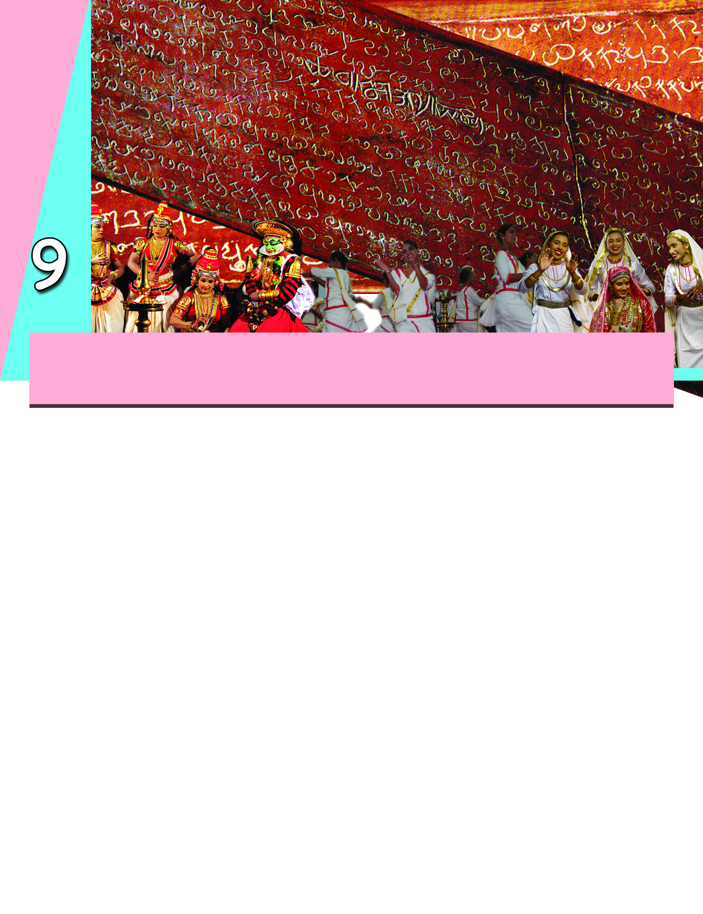
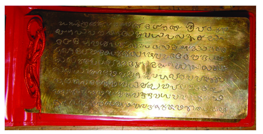
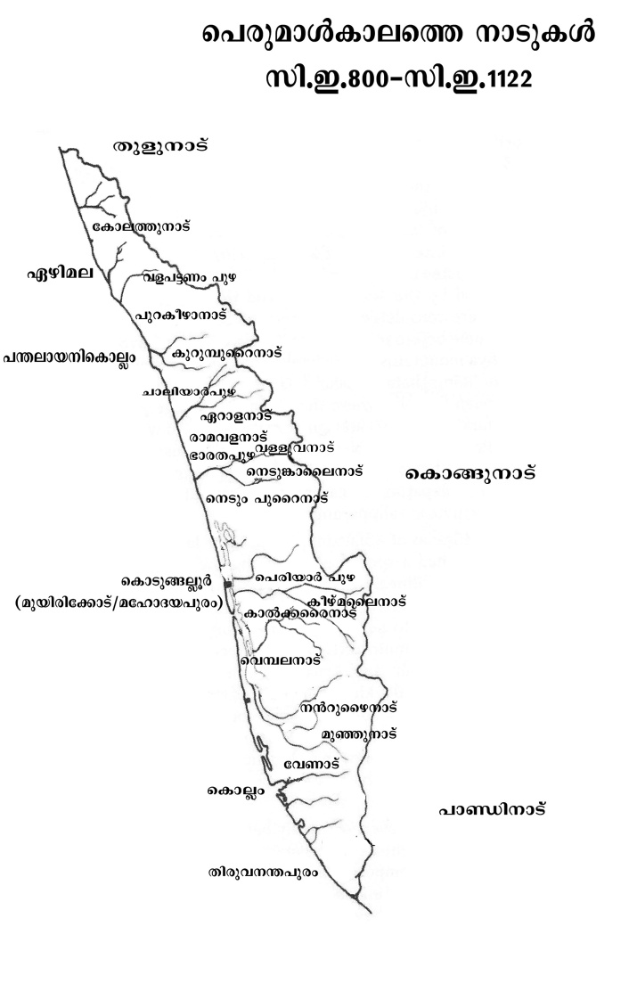
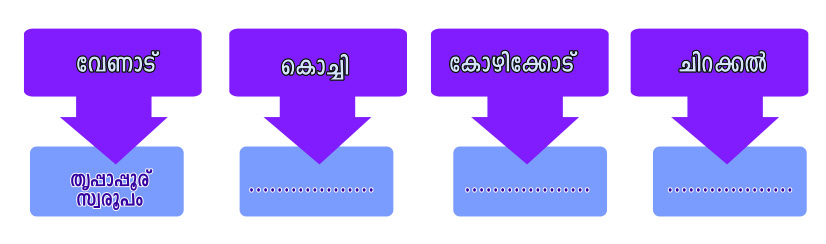
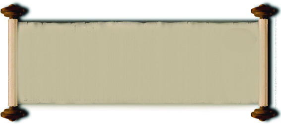
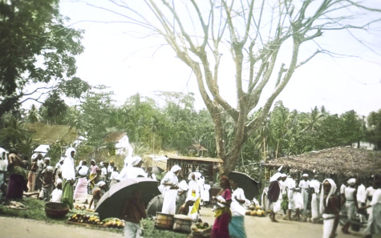
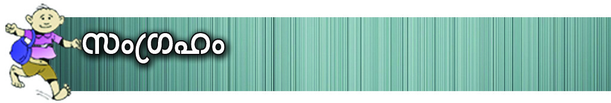
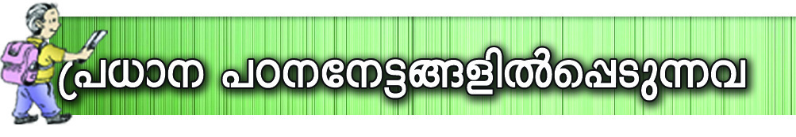
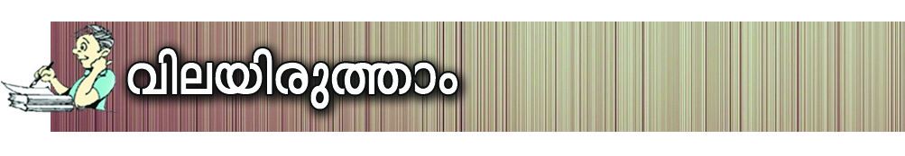
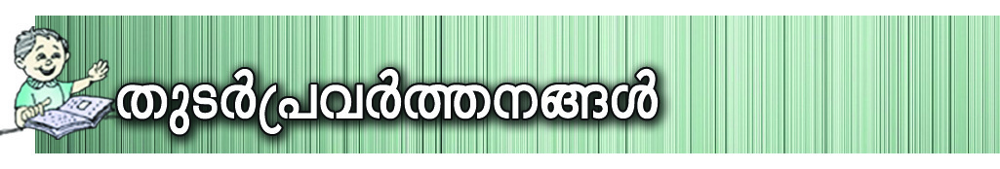

Ãm≥tU¿Uv VI
131
a[y-Ime tIcfw
a[y-Ime tIcfw
a[y-Ime C¥y-bpsS Ncn{Xw \mw ap≥ A[ym-b-ß-fn¬ ]cnNb-
s∏-´-t√m. Cu Ime-b-f-hn¬ tIc-f-Ønse P\-Po-hnXw Fß-s\-
bmbncp∂p? kn.C. HºXmw \q‰m≠v apX¬ ]Xn-s\´mw \q‰m≠p
hsc-bp≈ a[y-Ime tIcfsØ∏‰n Adnhp Xcp∂ kp{]-[m\
tcJ-IfmWv sNt∏-SpI-ƒ. AØcw sNt∏-SpI-fn-sem-∂mWv Nn{X-
Øn¬.
PqX sNt∏Sv
Page 35



Page 36


kmaq-ly-imkv{Xw
132
a[y-Ime tIcfw
sNºv XIn-Sn¬ Bte-J\w sNbvX enJn-
X-ß-sf-bmWv sNt∏-Sp-Iƒ F∂v hnfn-
°p-∂-Xv. \mSp-hm-gn-Iƒ t£{X-
߃°pw I®-h-S-kw-L-߃°pw a‰pw
Nm¿Øn-s°m-SpØ A[n-ImctcJ-Iƒ
{][m-\-ambpw sNt∏-Sp-I-fn-em-bn-cp-∂p.
DZm: sXcn-km-∏≈n sNt∏-Sv, PqX-sN-
t∏-Sv. Nne sNt∏-Sp-I-fn¬ \mSp-hm-gn-I-
fpsS `c-W-h¿jw tcJ-s∏-Sp-Øn-bn-
´p≠v.
sNt∏-Sp-Iƒ
CXn¬ tcJ-s∏-Sp-Ønb FgpØv \n߃°v
]cn-N-b-ap-≈-XmtWm? hs´-gpØv F∂ ]g-
b-Ime en]n-bn-emWv CsX-gp-Xn-bn-cn-°p-∂Xv.
atlm-Z-b-]pcw Bÿm-\-am°n a[y-ImeL´-
Øn¬ tIcfw `cn-®n-cp∂ `mkvI-c-c-hn A©p-
h-Æ-sa∂ I®-hS kwL-Øn\v A\p-h-
Zn®psImSpØ Ah-Im-i-ß-fmWv Cu tcJ-
bn-ep-≈-Xv.
Fhn-sS-bm-bn-cp∂p atlm-Z-b-]pcw?
Ahn-SpsØ a‰v `c-Wm-[n-Im-cn-Iƒ Bscm-
s°-bm-bn-cp-∂p? A°m-esØ P\-Po-hnXw
Fß-s\-bm-bn-cp∂p? \ap°v At\z-jn-°mw.
s]cp-am-°ƒ
tIcfw Dƒs∏-Sp∂ {]mNo\ Xan-g-I-Øn¬ aqth-¥-∑mcpsS
`c-W-amWv \ne-\n-∂n-cp-∂-Xv. {]mNo\ XangIsØ∏‰n ap≥
¢mkn¬ \n߃ a\- n-em-°n-bn-´p-≠-t√m. kn.C. HºXmw \q‰m-
t≠msS atlm-Z-b-]pcw tI{μ-am°n cmP-`-cWw \ne-hn¬ h∂p.
ChnSsØ cmPm°∑m¿ s]cp-am-°ƒ F∂-dn-b-s∏-´p. C∂sØ
sImSp-ß-√qcpw kao-]-{]-tZ-i-ßfpamWv atlm-Z-b-]pcw F∂v Adn-
b-s∏-´n-cp-∂-Xv. s]cp-am-°-∑m¿ tNc≥, tNc-am≥ XpS-ßnb t]cp-
I-fnepw Adn-b-s∏-´n-cp-∂p. Nne `c-Wm-[n-Im-cn-Iƒ Ipe-ti-J-c≥
F∂ ÿm\-t∏cpw kzoI-cn-®p.
C∂sØ tIc-f-Øns‚ `qcn-`mKw {]tZ-i-ßfpw s]cp-am-°-∑m-
cp-sS `c-W-Øn≥ Io-gn-em-bn-cp-∂p.
`q]-S-Øn¬ s]cp-amƒImesØ cmPyhnkvXrXn Fhn-sS-
sbms° hym]n-®n-cp∂p F∂v t\m°q. Ah hym]n-®n-cp∂
\mSp-Iƒ ]´n-I-bm°n Fgp-Xq.
Page 37



Ãm≥tU¿Uv VI
133
a[y-Ime tIcfw
hS°v tIme-Øp-\m-Sp-ap-X¬ sX°v thWm-Sphsc s]cp-amƒ
`cWw hym]n-®n-cp-∂-Xmbn I≠-t√m.
s]cp-amƒIm-esØ kmaq-lnIhpw kmº-ØnIhpamb khn-ti-
j-X-Iƒ Fs¥m-s°-bms-sW∂v t\m°mw.
Pe-e-`y-X-bp≈ {]tZ-i-ß-fn¬ Irjn hym]-I-am-bn.
Im¿jnI{Kma-ß-fn¬ {_m“-W¿ A[n-Imcw ÿm]n-®p.
t£{X-߃ A[n-ImctI{μ-ß-fmbn hnI-kn-®p-h-∂p.
Page 38



kmaq-ly-imkv{Xw
134
a[y-Ime tIcfw
Irjn-`q-an-bpsS DS-a-h-ÿm-h-Imiw {_m“-W¿°m-bn-cp-∂p.
`qan-bn¬ t\cn´v A[zm-\n-®n-cp-∂-h¿ Bf-Sn-bm-∑m-cm-bn-cp∂p.
{Kma-ß-fn¬ Irjn°v ]pdsa hnhn[ sXmgn¬ Iq´-ß-fp-ap≠m-
bn-cp-∂p. Irjn hf¿∂tXmsS \mSp-Iƒ D≠m-bn. Cu \mSp-Iƒ
`cn-®n-cp-∂-h¿ \mSp-hm-gn-Iƒ F∂-dn-b-s∏-´p.
\mSp-hmgn kzcq-]-߃
]{¥≠mw \q‰m-t≠msS s]cp-amƒ `cWw Ah-km-\n-®p.
AtXmsS Ah-cpsS Iogn¬ `cWw \S-Øn-bn-cp∂ \mSp-hm-gn-Iƒ
AXXp \mSp-I-fn¬ kz¥w \nebv°v `cWw Bcw-`n-®p.
\mSp-hmgnIƒ°v Iogn-ep≈ {]tZ-i-߃ kzcq-]-ßsf∂dn-
b-s∏-´p. \mSphmgnIfpsS IpSpw_hpw kzcq]w F∂ t]cn¬
Xs∂bmWv Adnbs∏´Xv.
IpSpw-_-Ønse aqØ AwK-amWv A[n-Imcw ssIbm-fn-bn-cp-∂-
Xv. thWmSv `cn-®n-cp∂ Xr∏m-∏qcv kzcq]w, sIm®n `cn-®n-cp∂
s]cp-º-S∏v kzcq-]w, tImgnt°mSv `cn-®n-cp∂ s\Sn-bn-cp∏v kzcq-
]w, Nnd-°¬ `cn-®n-cp∂ tImekzcq]w F∂n-h-bm-bn-cp∂p
{][m\ kzcq-]-߃.
\mSp-Iƒ XΩn¬ kº-Ønepw ssk\nIi‡nbnepw hyXym-k-
ßfp-≠mbn-cp-∂p. B[n-]-Xy-Øn\p th≠n \mSp-hm-gn-Iƒ
]c-kv]cw t]mc-Sn®p.
]´nI ]q¿Øn-bm-°p-I.
Page 39


Ãm≥tU¿Uv VI
135
a[y-Ime tIcfw
kn.C. 9 apX¬ 13 hsc \q‰m-≠p-
Ifn¬- tIc-f-Øn¬ I®-hSw
\S-Ønb kwL-ß-fm-Wnh.
tIc-f-Øns‚ IS¬Øoc ]´-
W-ß-fm-bn-cp∂p Ch-cpsS
{][m\ hym]m-c-tI-{μ-߃.
A©p-hÆw, aWn-{Kmaw
I®-hSw
a[y-Ime tIc-fØn¬ ]pdw-\m-Sp-I-fp-am-bp≈ I®-hShpw {]mtZ-
inI I®-h-Shpw ]ptcm-KXn {]m]n-®n-cp-∂p.
Fs¥ms° hn`-h-ß-fmIpw \ΩpsS tZiØp\n∂p
ssIam‰w sNbvXn-´p-≠m-hpI?
$
Gew
$
C©n
$
$
CXp-t]mse ]pdw-\m-´nse Dev]-∂-߃ Chn-SsØ hn]-Wn-I-
fnepw FØn-°m-Wp-a-t√m. Ah GsXm-s°-bm-sW∂v t\m°q.
Ifn-a¨]m-{X-߃
ao≥h-e-Iƒ
]´v
XpS-°-Øn¬ I®-hSw {][m-\-ambpw km[-\-߃°v ]Icw km[-
\-߃ ssIam-dp∂ coXn-bn-em-bn-cp-∂p. ]n∂oSv \mWbw \¬In
km[-\-߃ hmßn. A©p-hÆw, aWn-{Kmaw XpS-
ßnb t]cp-I-fn¬ I®-hS kwL-߃ A∂v \ne-
hn-ep-≠m-bn-cp-∂p. hym]m-c-Øns‚ {]m[m\yw a\-
n-em-°nb s]cp-am-°-∑m¿ I®-h-S-kw-L-߃°v
th≠ klm-b-߃ sNbvXp sImSp-Øp. I®-h-S-
®p¶w A°mesØ {][m\ hcp-am-\-am¿K-am-bn-
cp-∂p.
Aßm-Sn-Iƒ
A°m-eØv kap-{Z-hm-Wn-Py-Øn¬ henb ]ptcm-K-Xn-bp-≠m-bn.
Ib-‰p-aXn sNbvXn-cp∂ Dev]-∂-ß-fpsS Bhiyw h¿[n-®p. Dƒ\m-
Sp-I-fn¬ CØcw Dev]-∂-ß-fpsS Irjn hym]n-®p. {Kma-ß-fn¬
Dev]mZn∏n-°p∂ hn`-h-߃ Aßm-Sn-Ifn¬ sIm≠p-h∂v ssIam-dn.
Page 40





kmaq-ly-imkv{Xw
136
a[y-Ime tIcfw
Aßm-Sn-IfpsS hf¿® {]mtZ-inI I®-hSw i‡n-s∏-Sp-∂-Xn\v
klm-b-Iam-bn.
a[y-Im-e-L-´-Øn¬ kwkvIr-
Xhpw ]gb ae-bm-f-`m-jbpw
tN¿∂v Hcp `mjm-ssien
cq]w-sIm-≠p. AXv aWn-{]-hm-
f-co-Xn-sb-∂v Adn-b-s∏-Sp-∂p.
\nc-h[n {KŸ-߃ Cu
ssien-bn¬ cNn-°-s∏-´p.
aWn-{]-hmfw
A\-¥-]pcw, sIm√w, sIm®n, tImgn-t°mSv, ]¥-em-b\n XpS-ßn-
b-h-bmWv A∂sØ {][m\ Aßm-Sn-Iƒ. sIm√w, sIm®n, tImgn-
t°mSv, hf-]-´Ww XpS-ßnbh {][m\ Xpd-ap-J-ßfpam-bn-cp-∂p.
tIc-f-Øns‚ `q]SØn¬ ta¬∏-d™ Xpd-ap-J-ßfpsS
ÿm\w Fhn-sSsbms°bmsW∂v Is≠-Øq.
Ic-h-gnbpw IS¬h-gnbpw Aßm-Sn-I-fn¬ FØnb Dev]-∂-߃
GsXm-s°-bm-bn-cp-∂p? aWn-{]-hmfIrXnbmb "DÆp-
\oenktμi'Øn¬ hnh-cn-°p-∂Xv t\m°q.
X´w I´n¬ Ib-dp-he ssI°-´n¬ a©-´n-sIm´w
sam´pw ap´n¬°-c-bp-a-cnbpw s]´nbpw ]´p-\qepw
BSpw- NmSpw IpS-bp-a-Sbpw ]™nbpw ap™n-thcpw
\qdpw -tNmdpw Npd-bp-a-dbpw Imcn-cnºpw Icnºpw
X´w I´n¬ Ib-dp-he ssI°-´n¬ a©-´n-sIm´w
sam´pw ap´n¬°-c-bp-a-cnbpw s]´nbpw ]´p-\qepw
BSpw- NmSpw IpS-bp-a-Sbpw ]™nbpw ap™n-thcpw
\qdpw -tNmdpw Npd-bp-a-dbpw Imcn-cnºpw Icnºpw
Page 41


Ãm≥tU¿Uv VI
137
a[y-Ime tIcfw
Aßm-Sn-bn¬ \n∂p A°meØv e`n-®ncp∂ km[-\-߃
Fs¥√mw? ]´n-I-s∏-Sp-Øq.
Ah C∂pw \nß-fpsS \m´n-ept≠m?
ap≥ A[ym-b-Øn¬ ]e k©m-cn-Ifpw hym]m-c-sØ-∏‰n hnh-cn-
®-tXm¿°p-a-t√m.
]Xn-\©mw \q‰m-≠n¬ tIc-f-Øn-se-Ønb amlzm≥ F∂
ssN\okv k©mcn tImgn-t°mSv Xpd-ap-J-sØbpw Ahn-S-sØ
I®-h-S-sØ-bpw-]‰n hnh-cn-®Xv t\m°q.
""ssN\-bn¬ \n∂v Hcp I∏-se-Øp-tºmƒ cmPm-hns‚
{]Xn-\n[nbmb jm_-μ¿tIm-bbpw Hcp Z√mfpw I∏-en-
seØpw. I∏-ense hkvXp-°-fpsS ]´nI Xbm-dm°n
Nc-°p-hne IW-°m-°m≥ Hcp Znhkw \n›-bn°pw.
BZyw ]´p-h-kv{X-߃... hne \n›-bn-®p-I-gn-™m¬ {]Xn-
⁄-sb-Sp-°p-am-bn-cp-∂p: \nß-fpsS Nc-°p-I-fpsS hne
Ct∏mƒ \n›-bn-®n-cn-°p-∂p. Hcp Imc-W-h-imepw
AXn¬ am‰-߃ hcp-Øp-hm≥ ]mSp-≈-X√''.
Cßs\ Z√m-f-∑m¿ Dd-∏n-°p∂ hnebv°mWv hkvXp-°-ƒ
ssIam‰w sNbvXn-cp-∂-Xv.
amlzms‚ hnh-c-W-Øn¬ \n∂p tImgn-t°ms´ I®-h-S-sØ-°p-dn®v
Fs¥√mw hnh-c-߃ e`n°pw? Ipdn∏v Xbm-dm-°q.
`mj, kmlnXyw, Ie
"DÆp-\oenktμ-i'-Ønse Nne hcn-Iƒ \n߃ hmbn-®t√m. Cu
kmln-Xyw cq]-s∏-´Xv Ft∏m-gmWv? tIc-f-°-c-bn¬ {]mNo-\-
Im-ew -sXm´v ae-bm-f-`mj \ne-hn-ep-≠m-bn-cpt∂m?
tIc-fw ae-bm-f-tZiw F∂pw Adn-b-s∏-Sm-dp-≠-t√m. F¥p-
sIm-≠mIpw Cu t]cp h∂Xv? N¿®sNøq.
ae-bmfw Xan-g-n¬\n∂p cq]-s∏-´p-h∂ `mj-bmsW∂v s]mXpsh
Icp-X-s∏-Sp-∂p. kwkvIrXhpw ae-bm-f-`mj-bpsS hnIm-k-Øn¬
Gsd kzm[o\w sNep-Ønbn´p≠v. hs´-gpØv, tImse-gpØv F∂o
en]n-IfnemWv ]gb ae-bmfw Fgp-Xn-bn-cp-∂-Xv. hs´-gp-Øn-se-
gp-Xnb PqX-sNt∏Sv I≠-tXm¿°p-∂p≠t√m.
Page 42


kmaq-ly-imkv{Xw
138
a[y-Ime tIcfw
tIc-f-Ønse ap…o-߃°n-S-
bn¬ {]Nm-c-Øn-ep-≠m-bn-cp∂
Hcp k¶-c-`m-j-bmWv Ad_n
ae-bm-fw. Ad_n en]n-bm-bn-
cp∂p CXv Fgp-Xm≥ D]-tbm-
Kn-®n-cp-∂-Xv.
Ad_nae-bmfw
sNdp-t»cnbpsS IrjvW-KmY, Fgp-Ø-—s‚ cmam-b-Ww, alm-`m-
cXw Infn-∏m-´p-Iƒ Ip©≥\ºym-cpsS Xp≈¬ IrXn-Iƒ F∂nh
ae-bm-f-`m-j-bpsS hnIm-k-Øn\v hgn-sX-fn®p.
]Xn-t\gmw \q‰m-≠n¬ Jzmkn apl-ΩZv Ad_nae-bm-f-Øn¬
cNn® "apln-bn-±o≥ ame'bpw ]Xn-s\´mw \q‰m-≠n¬ A¿tWmkp
]mXncn cNn® "]pØ≥]m\'bpw ae-bmf`mj-bpsS ]ptcm-K-Xn°v
klm-b-I-am-bn. Ch-bv°p-]p-dsa hS-°≥]m´p-Iƒ, sX°≥]m-´p-
Iƒ, sXmgn¬∏m-´v, F∂n-hbpw ae-bm-f-`m-jsb IqSp-X¬
P\-Iob-am-°n.
hnhn-[-Xcw ]m´p-I-fnse hcn-Iƒ tiJ-cn-°q. tiJ-cn-®h
¢mkn¬ Ah-X-cn-∏n°q.
apI-fn¬ \¬Inb Nn{X-߃ {i≤n-°q. GsX√mw Iem-cq-
]-ß-fm-Wh F∂p ]d-bmtam?
a[y-Ime tIc-f-Øn¬ hnImkw {]m]n® Iem-cq-]-ß-fn¬ Nne--
Xm-Wn-h. t£{X-߃ tI{μo-I-cn®v \rØw, kwKoXw XpS-ßnb
Ie-Iƒ hf¿∂ph∂p.
IqØv, IqSn-bm´w, IYI-fn XpS-ßnb Ie-Iƒ t£{X-ß-tfmSp
tN¿∂ IqØ-º-e-ß-fn-emWv Ac-tß-dn-bncp-∂-Xv. Ah t£{X-
Page 43


Ãm≥tU¿Uv VI
139
a[y-Ime tIcfw
Im¥-fq¿im-e
hngn-™w-im-e
]m¿Yn-h-ti-J-c]pcw ime
ime-Iƒ
I-e-I-fmbmWv Adn-b-s∏-Sp-∂-Xv. Imhp-I-f-nepw a‰v Bcm-[-\m-bn-
S-ß-fnepw \S-Ø-s∏-Sp∂ sXøw, Xnd, Ifw-]m´v XpS-ßn-bh
A\p-jvTm-\-I-e-I-fm-Wv. Ah t£{X-I-e-Itf°mƒ P\-Io-b-am-
bn-cp∂p.
t£{X-ß-fn¬ Ie-Iƒ Ac-tß-dp∂ thZn Adn-b-s∏Sp∂Xv
GXp t]cn-emWv?
A\p-jvTm-\-I-e-Iƒ P\-Io-b-am-bn-cp-s∂∂v ]d-bp-∂Xv
F¥p-sIm-≠mhpw?
Ch IqSmsX hnhn[ aX-hn-`m-K-ßfpsS A\p-jvTm-\-ß-fp-sSbpw
BtLm-j-ß-fp-sSbpw `mK-ambn \S-Øn-bn-cp∂ ]e Ie-I-fp-ap-
≠m-bn-cp-∂p. H∏\, am¿Kw-I-fn, Nhn´p-\m-SIw XpS-ßnbh CXn-
\p-Zm-l-c-W-ß-fm-Wv.
hn⁄m\w
ssh⁄m-\n-I taJ-e-bnepw a[y-Ime tIcfw anI® ]ptcm-KXn
ssIh-cn-®n-cp-∂p. s]cp-amƒIm-esØ {][m\ tPymXn-»m-kv{X-
⁄-\m-bn-cp∂p i¶-c-\m-cm-b-W≥. At±lw cNn® tPymXn-imkv{X
{KŸ-am-Wv "i¶-c-\m-c-bWobw' . KWn-X-im-kv{X-cw-KØv kw{Kma
am[-h≥ \¬Inb kw`m-h-\-Iƒ temI-{i≤ t\Sn. Bbp¿thZ
{KŸamb "AjvSmw-K-lr-Zbw' Fgp-Xn-bXpw A°m-e-Øm-bn-cp-∂p.
Ncn-{X-hnhcßfSßnb "aqj-I-hw-i'hpw "Xpl-^-Øp¬ apPm-ln-
Zo'\pw a[y-Im-e-L-´-Ønse krjvSn-I-fm-Wv.
A°m-esØ hnZym-tI-{μ-߃ ime-Iƒ F∂-dn-
b-s∏-´p. Ch t£{X-ß-tfm-S-\p-_-‘n-®m-bn-cp∂p
{]h¿Øn-®n-cp-∂-Xv. _p≤-tI-{μ-ß-tfmSp tN¿∂v
hnZym-e-b-ßsf "]≈n-Iƒ' F∂mWv hnfn-®ncp-∂-Xv.
hn⁄m\cw-KsØ a[y-Im-e-tI-c-f-Øns‚ kw`m-h-\-Iƒ
Dƒs°m-≈n®v Xmsg-X-∂n-cn-°p∂ Ub{Kw ]q¿Øn-bm-°p-I.
Page 44



kmaq-ly-imkv{Xw
140
a[y-Ime tIcfw
]Xn-s\´mw \q‰m-t≠msS hyXy-kvX-amb kmº-Øn-I-˛km-aq-lnI
{Ia߃ tIc-f-Øn¬ cq]w-sIm-≠p. CtXm-sSm∏w tIc-f-Ønse
`mj, Ie, hn⁄m\w F∂n-hbpw X\-Xmb cq]w ssIh-cn-®p.
a[y-Ime tIc-f-sØ-∏‰n hnhcw Xcp∂ {][m\ sXfn-hp-
I-fn¬ H∂v sNt∏-Sp-I-fm-Wv.
s]cp-amƒ`-c-W-Im-e-ØmWv tIcfw Hcp {]tXyI `c-W-ta-
J-e-bmbn hf¿∂-Xv.
Irjnbpw I®-h-Shpw s]cp-amƒIm-esØ kº-Øn-\-Sn-ÿm-
\-ambn.
s]cp-amƒ`-cWw £bn-®-tXmsS \mSp-hm-gn-Iƒ `cWw Gs‰-
Sp-Øp.
kzcq-]-ß-sf-∂mWv \mSp-hmgn `c-W-{]tZi-߃ Adn-b-s∏-
´-Xv.
Page 45




Ãm≥tU¿Uv VI
141
a[y-Ime tIcfw
B`y-¥-c˛hntZi hym]mcw i‡n-s∏SpIbpw ]pXnb Aßm-
Sn-Ifpw Xpd-ap-J-ßfpw hf¿∂phcp-Ibpw sNbvXp.
ae-bm-f-`mj hnImkw {]m]n-®p.
kmln-Xyw, Ie, hn⁄m\w F∂o taJ-e-I-fn¬ ]ptcmKXn
ssIh-cn-®p.
a[y-Im-e-tI-c-f-sØ-°p-dn®v hnh-c-߃ \¬Ip∂ {][m-\-
sX-fnhv sNt∏-Sp-I-fm-sW∂v Xncn-®-dn-™v hni-Zo-I-cn-°p-∂p.
s]cp-am-°-∑m-cpsS `c-Ww tIc-fsØ Hcp {]tXyI ta-J-e-
bmbn hf¿Øn-sb∂v Is≠Øn Ah-X-cn-∏n-°p-∂p.
B`y-¥-c˛Xpd-apJ I®-h-S-Øns‚ hf¿® hni-Ie\w
sNøp∂p.
ae-bmf`mj, kmln-Xyw, hn⁄m\w F∂o cwK-ß-fnse
]ptcm-KXn hni-Zo-I-cn-°p-∂p.
tIc-fobIe-Isf Xncn-®-dn-™v Ah Bkz-Zn-°m-\p≈ at\m-
`mhw cq]-s∏-Sp--∂p.
s]cp-amƒIm-esØ kmaqlyPohnXsØ-°p-dn®v Ipdn∏v
Xbm-dm-°p-I.
tIc-f-Ønse {Kma-ß-fpsS hf¿®bpw Irjn-bpsS hym]-
\hpw XΩn¬ Fßs\ _‘s∏-´n-cn-°p∂p? hniZam°pI.
a[y-ImetIc-f-Ønse B`y-¥-c-˛-Xp-d-apJ I®-h-
SsØ°pdn®v Ipdn∏v Xbm-dm-°pI.
a[y-ImeL´Øn¬ tIc-f-Øn¬\n∂p Ib-‰p-a-Xn sNbvXXpw
Chn-tS°v Cd-°p-a-Xn sNbvXXpamb Dev]-∂-ß-fpsS ]´nI
Xbm-dm-°p-I.
Page 46



kmaq-ly-imkv{Xw
142
a[y-Ime tIcfw
]q¿W-ambn
`mKn-I-ambn
Xosc-bn√
s]cp-amƒ`c-W-Im-eØv tIcfw Hcp
{]tXyI `c-W-ta-J-e-bmbn hf¿∂p F∂
[mcW t\Sn.
a[y-ImetIc-f-Ønse Irjn, I®-h-Sw,
hmWnPyw F∂n-h-bpsS ]ptcm-KXn Xncn-
®-dn-bm≥ Ign-™p.
s]cp-amƒ `c-W-Ø-I¿®-tbmsS \mSp-hm-gn-
Iƒ A[n-Im-c-Øn-se-Øn-bXv hne-bn-cp-
Øm≥ Ign-bpw.
a[y-Im-e-L-´-Øn¬ Aßm-Sn-Ifpw Xpd-ap-
J-ßfpw hf¿∂p-h∂ ]›m-Øew hni-I-
e\w sNøpw.
kmln-Xyw, Ie, `mj F∂o taJ-e-bn-ep-
≠mb ]ptcm-KXn hni-Zo-I-cn-°m≥ Ign-bpw.
kzbw hne-bn-cpØmw
kzbw hne-bn-cpØmw
kzbw hne-bn-cpØmw
kzbw hne-bn-cpØmw
kzbw hne-bn-cpØmw
ae-bm-f-`m-j-bp-sSbpw
kmln-Xy-Øn-s‚bpw
hf¿®sb°pdn®v Hcp {]_‘w Xbm-dm-°pI.
ssh⁄m-\nI taJ-e-bn¬ a[y-Im-e-tI-cfw ssIh-cn® t\´-
߃ kw_-‘n®v Hcp Ipdn∏v Xbm-dm-°p-I.
tIc-fobIe-I-fpsS Nn{X-ß-ƒ tiJ-cn®v B¬_w Xbm-dm-
°p-I.